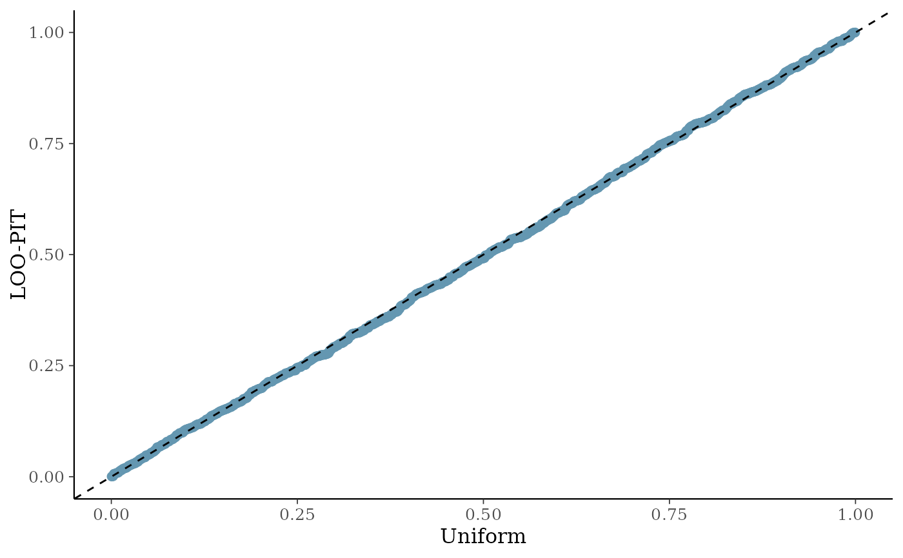
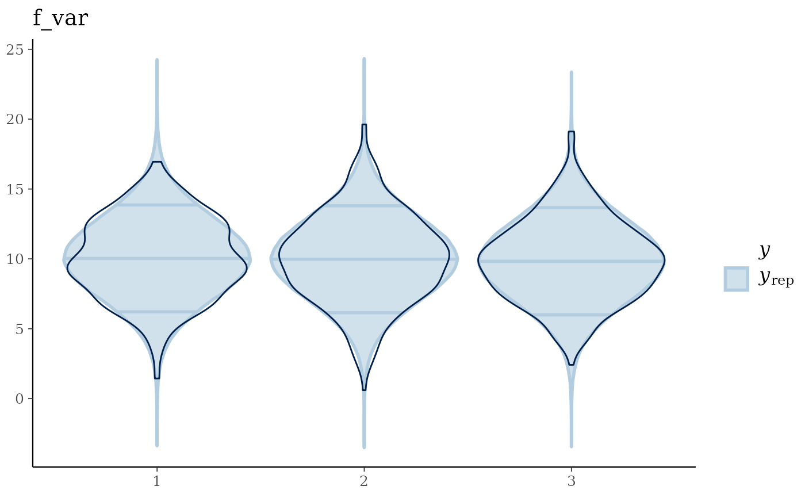

Perform model fit checks for brms models
model_fit(brmsfit, Prior = FALSE)Returns a list containing (a) the maximum R-hat value, (b) the minimum effective sample size, (c) traceplots, (d) posterior predictive check plots, and (e) prior and posterior sample plots (if priors are available).
# Simulate data
md = tibble::tibble(
group = factor(sample(1:10, 1000, replace = TRUE)),
f_var = factor(sample(1:3, 1000, replace = TRUE)),
n_var = rnorm(1000, mean = 0, sd = 1),
resp = rnorm(1000, mean = 10, sd = 3))
# Run model
mod = brms_model(Response = "resp",
FixedEffect = c("f_var","n_var"),
RandomEffect = "group",
Family = "gaussian",
Data = md)
#> [1] "No problems so far 🙌"
#> Compiling Stan program...
#> Start sampling
# Check model fit
model_fit(mod, Prior = TRUE)
#> No divergences to plot.
#> Using all posterior draws for ppc type 'violin_grouped' by default.
#> Rhat EffectiveSampleSize
#> 1 1.001913 1657.166
#> n 2: Gradient evaluation took 0.000207 seconds
#> Chain 2: 1000 transitions using 10 leapfrog steps per transition would take 2.07 seconds.
#> Chain 2: Adjust your expectations accordingly!
#> Chain 2:
#> Chain 2:
#> Chain 1: Iteration: 1 / 30000 [ 0%] (Warmup)
#> Chain 2: Iteration: 1 / 30000 [ 0%] (Warmup)
#> Chain 1: Iteration: 3000 / 30000 [ 10%] (Warmup)
#> Chain 2: Iteration: 3000 / 30000 [ 10%] (Warmup)
#> Chain 1: Iteration: 6000 / 30000 [ 20%] (Warmup)
#> Chain 2: Iteration: 6000 / 30000 [ 20%] (Warmup)
#> Chain 1: Iteration: 9000 / 30000 [ 30%] (Warmup)
#> Chain 2: Iteration: 9000 / 30000 [ 30%] (Warmup)
#> Chain 2: Iteration: 12000 / 30000 [ 40%] (Warmup)
#> Chain 1: Iteration: 12000 / 30000 [ 40%] (Warmup)
#> Chain 2: Iteration: 15000 / 30000 [ 50%] (Warmup)
#> Chain 2: Iteration: 15001 / 30000 [ 50%] (Sampling)
#> Chain 1: Iteration: 15000 / 30000 [ 50%] (Warmup)
#> Chain 1: Iteration: 15001 / 30000 [ 50%] (Sampling)
#> Chain 2: Iteration: 18000 / 30000 [ 60%] (Sampling)
#> Chain 1: Iteration: 18000 / 30000 [ 60%] (Sampling)
#> Chain 2: Iteration: 21000 / 30000 [ 70%] (Sampling)
#> Chain 1: Iteration: 21000 / 30000 [ 70%] (Sampling)
#> Chain 2: Iteration: 24000 / 30000 [ 80%] (Sampling)
#> Chain 1: Iteration: 24000 / 30000 [ 80%] (Sampling)
#> Chain 2: Iteration: 27000 / 30000 [ 90%] (Sampling)
#> Chain 1: Iteration: 27000 / 30000 [ 90%] (Sampling)
#> Chain 2: Iteration: 30000 / 30000 [100%] (Sampling)
#> Chain 2:
#> Chain 2: Elapsed Time: 58.138 seconds (Warm-up)
#> Chain 2: 59.767 seconds (Sampling)
#> Chain 2: 117.905 seconds (Total)
#> Chain 2:
#> Chain 1: Iteration: 30000 / 30000 [100%] (Sampling)
#> Chain 1:
#> Chain 1: Elapsed Time: 58.862 seconds (Warm-up)
#> Chain 1: 65.561 seconds (Sampling)
#> Chain 1: 124.423 seconds (Total)
#> Chain 1:

